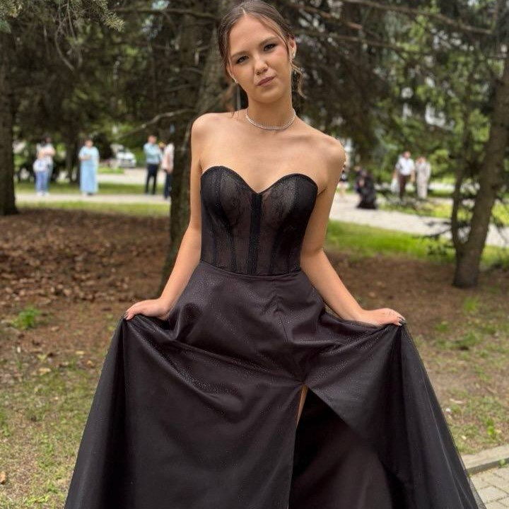

Откуда родом и где живу
Родилась и живу в Пензе. Это мой родной город, с которым связана вся моя жизнь — без переездов, с привычными маршрутами, любимыми местами для прогулок и ощущением дома.

Небольшая страница обо мне: где я родилась и живу, как прошли мои школьные годы, кто рядом со мной и чем я люблю заниматься в свободное время.
По натуре я открытый и жизнерадостный человек: искренне люблю живое общение, интересные события и насыщенные дни в компании близких по духу людей, после которых остаётся много тёплых воспоминаний. Мне легко увлечься новой идеей и поддержать общую инициативу.
При этом для меня очень важен внутренний баланс — после активного общения и насыщенных мероприятий мне обязательно нужно спокойное время наедине с собой, чтобы отдохнуть, побыть в тишине, заняться творчеством и восстановить силы.
Родилась и живу в Пензе. Это мой родной город, с которым связана вся моя жизнь — без переездов, с привычными маршрутами, любимыми местами для прогулок и ощущением дома.
Училась в Гимназии № 216 «Дидакт» города Заречного. Школьные годы прошли очень насыщенно: я участвовала в мероприятиях проекта «Школа Росатома», научных конференциях, форумах и творческих выступлениях. Школа дала сильный старт для дальнейшего обучения и жизни.
Рядом со мной надёжные и близкие друзья, с которыми легко разделить и весёлые встречи, и спокойные разговоры. Я очень ценю искренность, взаимную поддержку и людей, с которыми можно оставаться собой.
Детализированные иллюстрации, которые помогают переключиться и отдохнуть.
Спокойный творческий процесс и радость от готовой работы.
Кропотливая работа с мелкими деталями, требующая внимания и усидчивости.
Чтение книг с увлекательными сюжетами и запоминающейся атмосферой.
С интересом слежу за соревнованиями, программами и техникой фигуристов.
Вдохновляюсь грацией, артистизмом и сложными выступлениями спортсменок.